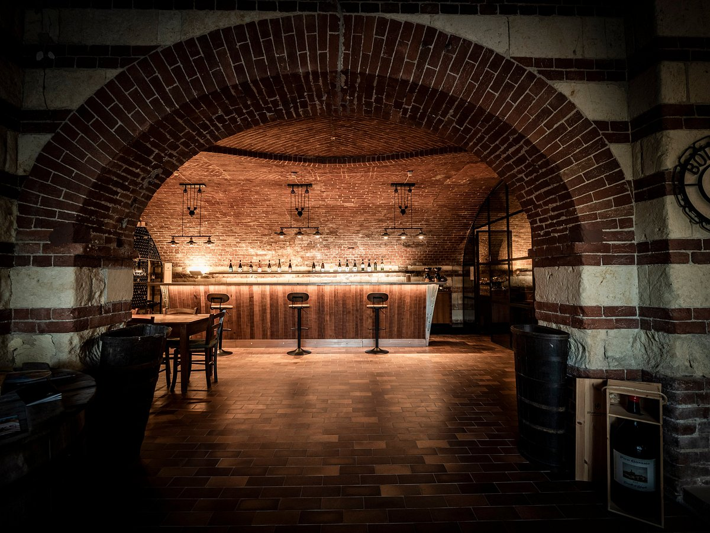
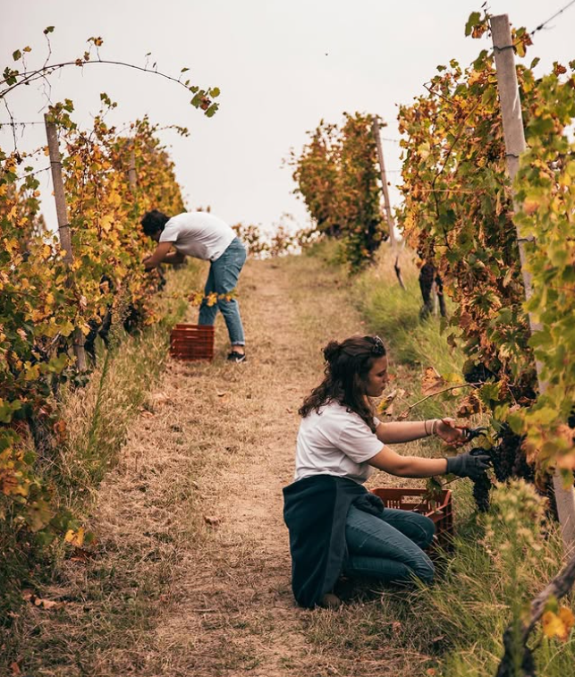
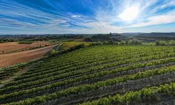

Monferrato · Piemonte · Dal 1491
Bilancio di Sostenibilità 2024 — L'impegno quotidiano di una cantina storica per un futuro sostenibile tra le colline del Monferrato.
Scopri il reportLa nostra identità
La vita del Castello di Uviglie è il racconto autentico della tenacia richiesta per vivere e lavorare tra le colline dell'Alessandrino. È la storia della famiglia Bonzano che porta avanti con passione una tradizione vitivinicola del Monferrato iniziata nel 1491.
Con 45 ettari di vigneti coltivati tra i 300 e i 500 metri di altitudine, l'azienda produce vini di alta qualità legati ad un uso consapevole delle risorse naturali e ad un profondo rispetto per il territorio.
La missione è dare l'opportunità di conoscere intimamente la Natura attraverso i suoi prodotti, il lavoro sapiente dell'uomo, il buon vivere in un ambiente integro e la passione per nuove sfide.
Produzione e territorio



La cantina è progettata per preservare tutti gli aromi delle uve. La fermentazione avviene in vasche di acciaio, l'affinamento in acciaio o in legno a seconda della tipologia di vino.
L'invecchiamento avviene in una cantina sotterranea, protetta dalla luce, con temperatura controllata per preservare qualità e gusto nel tempo.
La scelta di certificare l'intera filiera S.Q.P.N.I. ed EQUALITAS è una dimostrazione concreta della trasparenza e dell'impegno dell'azienda nei confronti dei propri clienti e del territorio.
Ambiente
L'azienda si impegna a ridurre l'impatto ambientale delle proprie attività con tecniche agricole sostenibili e soluzioni eco-friendly in cantina.
Prelievo idrico 2023 per le attività in cantina. L'acqua proviene interamente da falda, con zero impatto sull'ambiente. È attivo un progetto di raccolta delle acque superficiali per uso agricolo.
Consumo totale di energia elettrica 2023. Monitoraggio costante di illuminazione, refrigerazione e vinificazione.
Lotta integrata: nessun agente chimico, compost organico, sovescio con legumi e trifoglio per proteggere il suolo.
Biodiversità: cura dei boschi, riforestazione e agricoltura rigenerativa.
Economia circolare: bottiglie in vetro leggero (27% → obiettivo 60% entro 2025), scatole auto-montanti.
Il clima e la vite
Il report documenta come il cambiamento climatico stia influenzando la viticoltura nella regione del Monferrato.
Le somme termiche — indicatore del calore accumulato durante la stagione vegetativa — mostrano un trend in crescita nel lungo periodo, con oscillazioni significative tra le annate.
Anche le temperature medie mensili confermano questo andamento: nelle annate più calde le temperature superano la media storica da maggio a ottobre, allungando la stagione vegetativa e anticipando la maturazione delle uve.
Traguardi e futuro
Certificata da Valoritalia. Prevede limiti di solforosa totale, produzione senza sostanze chimiche di sintesi e senza OGM. Vinificazione con soli prodotti autorizzati.
Sostenibilità del settore vitivinicolo basata sui tre pilastri: sociale, ambientale ed economico. Modello italiano di qualità sostenibile riconosciuto a livello mondiale.
| Obiettivo | Descrizione | Scadenza |
|---|---|---|
| Consumo idrico | Riduzione del 20% con saving idrico | 2025 |
| Packaging | Studi materiali ecosostenibili | 2025 |
| Carbon Foot Print | Calcolo dell'indice d'impatto | 2026 |
| Water Foot Print | Calcolo impronta idrica | 2025 |
| Biodiversità | Calcolo indice di biodiversità | 2024 |
Scarica e connettiti
Il Bilancio di Sostenibilità 2024 è disponibile per il download in PDF. Include tutti i dati ambientali, sociali ed economici, le certificazioni e gli obiettivi futuri dell'azienda.
Scarica il PDF
Pilastro sociale
Impatto sociale
Il benessere dei dipendenti è un tema imprescindibile. L'azienda offre formazione e sviluppo professionale, promuovendo un ambiente di lavoro inclusivo basato sull'uguaglianza.
Parità, equità e inclusione guidano il lavoro quotidiano. La sicurezza è priorità assoluta con valutazioni periodiche dei rischi e misure preventive.
L'azienda sostiene la comunità locale con eventi di formazione in campo viticolo e supporto a organizzazioni non profit.
Il tasso di rinuncia al lavoro è 0%, a conferma di un ambiente di lavoro sano e di una squadra stabile e motivata.